Moon
p = 0.0005
Oct–Nov flash rate 1.84× other months. 16 Taurid-tagged flashes on 29–31 Oct 2022, a predicted swarm year. Sporadic flashes show no excess (p = 0.40).
Impact Hypothesis · Phases 2–4 · 27 November 2026
We tested whether the Taurid / Encke meteor stream lines up with dated impacts on Earth, the Moon and Mars, and whether ancient monuments were built or carved to commemorate those events. Every historical test used a random-date or random-orientation control. The one clear signal is on the Moon today. The Holocene craters, Mars, the monuments, the Vulture Stone “date stamp,” and the Younger Dryas boundary all come out null or inconclusive.
Read the Taurid findings · Scorecard · Taurid report (PDF) · Part 2: Streams, Myths, Sun & the Next Big One · Cataclysm report (PDF) · Part 3: Monuments, Constellations & the Younger Dryas · Monument–sky report (PDF) · Part 4: Long-Period Comets, Interstellar Visitors & Centaurs · LPC & Centaur report (PDF) · Part 5: Floods, Myths & Rising Seas · Floods report (PDF) · Impact & solar timeline
Loading catalog…
Times are America/New_York (Eastern, 24-hour). CNEOS source times are TDB and have been converted.
| Object | Body | Date (ET) | Distance (km) | Distance (LD) | vrel (km/s) | Size | H | PHA |
|---|
Object names link to the official JPL SBDB page. Distances and times in this table are the CNEOS values, converted to Eastern Time and to km / lunar distances (1 LD = 384,400 km). Size is a JPL-measured diameter when one exists; otherwise it is estimated from absolute magnitude H (Fowler & Chillemi 1992) with pV = 0.154, the CNEOS Sentry convention, and a typical albedo range of 0.05–0.25 shown on hover. Click a row to sketch its orbit.
| Object | Date (ET) | CNEOS (km) | Ours (km) | Δ km | Δ min |
|---|
Top-down ecliptic J2000 view of the inner solar system. Planet rings are circular at their mean distances, for scale. The NEO path is a Keplerian ellipse from the JPL SBDB osculating elements — a sketch, not the N-body validation on the left.
The one significant result
The NELIOTA lunar impact-flash survey recorded 16 flashes from Taurid meteoroids on 29–31 October 2022, a year predicted in advance as a Taurid “resonant swarm” return. Across August 2019–August 2023, flashes per observed hour were 1.84 times higher in October–November than in other months (p = 0.0005). October–November ranks first of the twelve two-month windows. That whole excess comes from meteor showers (Taurids plus Orionids). Flashes tagged as sporadic show no October–November excess (ratio 1.09, p = 0.40). The Taurid impactors were roughly 20–250 grams.
Monthly observing hours were digitised from Fig. 2 of Liakos et al. 2024; our total is 172.76 hours against their published 172.9 hours. Validated flashes alone give a ratio of 1.51 (p = 0.051).

Every historical test is against a random-date or random-orientation control. “Significant” means the result is unlikely under that control. “Null” means the data look like chance. “Inconclusive” means the test did not have enough power, or the comparison was chosen after looking at the plot.
Oct–Nov flash rate 1.84× other months. 16 Taurid-tagged flashes on 29–31 Oct 2022, a predicted swarm year. Sporadic flashes show no excess (p = 0.40).
No Taurid-season excess in 1,074 CNEOS fireballs (1988–2026). No excess in predicted swarm years. Holocene craters sit at ordinary stream activity; all seven were iron meteorites, not cometary debris. The Younger Dryas boundary is also consistent with chance (p = 0.30).
Taurid orbits do pass close to Mars, but among 80 fresh craters dated to within about six months, the count at those orbital crossings matches chance (ratio 1.00). Most Martian dating windows are years long, so the test has little power.
The method finds the known solstice alignments at Stonehenge, Newgrange and Nabta Playa. Taurid-radiant alignments look like chance (2 of 15 tests under p = 0.05, where 0.75 are expected). Construction dates are not unusually high in Taurid activity (p = 0.98).
The summer-solstice Sun stood over the Sagittarius “teapot” spout about 300 years before the claimed 10,950 BC, and Enclosure D was built 1,350–2,150 years after the claimed event. Several equally valid readings of the pillar make a chance hit on the Younger Dryas unsurprising (9–31%).
In the NASA/JPL CNEOS fireball catalog, the Taurid activity window (solar longitude 168–258°) holds 263 of 1,074 events against 268.5 expected (ratio 0.98, p = 0.66). The narrower “core” window and the June daytime β Taurids are also consistent with a uniform year. Predicted swarm years (1995, 1998, 2005, 2008, 2015, 2022, 2025) show no excess (odds ratio 1.12, p = 0.35).

Southern and Northern Taurid orbits pass within about 0.01–0.06 au of Mars’s orbit, at Mars heliocentric longitudes near 0–30° and 270–295°. We compared 1,203 dated new Martian craters (Daubar et al. 2022) with those crossing longitudes. The 80 craters with formation windows of 172 days or less had 6.46 expected impacts in the bands versus a null of 6.47 ± 1.54. Ratio 1.00, p = 0.49.

We rebuilt the precession-corrected sky (Vondrák, Capitaine & Wallace 2011) at the construction dates of Göbekli Tepe Enclosure D, the Great Pyramid, Stonehenge, Newgrange and the Nabta Playa calendar circle, and asked how close each axis came to the rising or setting of the Sun, several bright stars, and the Taurid radiant of that era (taken from the backtrack). Two controls: windows of the same length placed at random between 12,000 BC and AD 1, and the monument’s axis set rotated at random.
The solar test is the positive control, and it works: Stonehenge, Newgrange and Nabta Playa recover their published solstice alignments (3 of 10 solar tests p < 0.05; combined p = 0.012). Taurid radiants do not: 2 of 15 tests came in under p = 0.05, where 0.75 would be expected by chance (combined p = 0.17), and neither “hit” is convincing on its own. Giza’s due-east axis will match any object near the equator; the Nabta match is a daytime shower whose radiant sits next to the Sun and would have been invisible. The Precession Clock already shows how the sky over these sites drifts with time.
Open the Precession Clock — north-pole stars, the equinox drift, and the pre-dawn equinox sky at Giza, Stonehenge and Göbekli Tepe.

Sweatman & Tsikritsis (2017) read Pillar 43 at Göbekli Tepe as a star map, with the vulture as the Sagittarius “teapot,” and dated it to 10,950 ± 250 BC by placing the summer-solstice Sun over the teapot’s spout — close to the proposed Younger Dryas impact. Using the same long-term precession model, the summer-solstice Sun stood over the spout star (γ² Sagittarii) in about 11,250 BC, not 10,950 BC. The teapot as a whole spans 11,250–12,250 BC. Enclosure D was built about 9600–8800 BC, 1,350–2,150 years after the claimed event.
If several equally plausible readings are allowed (which solstice or equinox, which star), a chance hit within ±250 years of the Younger Dryas is not rare: about 9% for four readings, 17% for eight, 31% for sixteen. The pillar can still be symbolic. It is not a dated commemorative stamp of that event.

Hypothesis for a pre-registered follow-up — not a finding
Comet 2P/Encke’s orbit crossed Earth’s in pairs about every 2,930 years: around 11,780 / 11,480 BC, 8,950 / 8,620 BC, 5,760 / 5,420 BC, 2,930 / 2,690 BC, and 60 BC / AD 250. Clone orbits stay coherent; the uncertainty grows from about ±20 years recently to about ±230 years at 12,000 years ago. Outgassing forces are not modelled.
Göbekli Tepe Enclosure D, Newgrange, Stonehenge and Giza each fall within about 250 years of one of those pairs. Against uniform random dates that looks unlikely (p = 0.019). With a fairer control that keeps their real clustering — most of these monuments were built in 3200–2500 BC — the result is not significant (p = 0.17; 0.087 without Giza). We noticed this after looking at the plot, so it is a hypothesis, not a result. The next step is a pre-registered list of monuments and dates, fixed before the comparison is run again. That follow-on work is now published below as Part 2: Streams, Myths, Sun & the Next Big One. We report whatever the data say, including null results.


Hover or tap to read a date. Gold ticks are Encke’s Earth-orbit crossings (a hypothesis for follow-up). Green bands are monument construction windows, brown are Holocene craters, purple is the Younger Dryas boundary, and orange is the claimed Vulture Stone date.
Hover a band, tick or the red curve for details.
These are long-run averages, not a schedule. No data set in this study shows a cycle that predicts when the next impact comes. “Chance next 100 years” assumes a random (Poisson) process at the published mean interval.
| Event class | Mean interval | Chance, next 100 years | Source |
|---|---|---|---|
| ~20 m airburst (Chelyabinsk-class) | 50–100 years | 63–86% | NASEM 2022 (from Harris & Chodas 2021) |
| ≥140 m impact (regional devastation) | ~20,000 years | 0.5% | NEOMOD 3 (Nesvorný et al. 2024); NASEM 2022 |
| ≥1 km impact (global effects) | 570,000–660,000 years | 0.016% | NEOMOD 3. About 95% of this population is already found; none is on a collision course this century. |
| ~10 km impact (Chicxulub-class; global fire pulse) | ~100 million years | ~0.0001% | NASEM 2022 (order of magnitude) |
| Carrington-class geomagnetic storm | ~55–85 years | ~70–83% | This study, counting 2–3 such storms since 1859 (90% range on the decade rate: 2–37%) |
| Miyake event (extreme solar-particle event) | ≲1,000–5,000 years | ~2–10% | This study; a lower bound, because only ~16% of the Holocene has annual 14C coverage |
NASA Sentry (retrieved 27 November 2026) lists 2,259 objects; none has a Torino scale rating above 0. The highest Palermo-scale entries are 1950 DA (1.3 km, about 1 in 2,900 in AD 2880) and Bennu (about 1 in 1,750 over 2178–2290). The 4.3% chance that asteroid 2024 YR4 would hit the Moon in 2032 was ruled out by JWST observations on 5 March 2026 (NASA / ESA).
Same language as Part 1. “Significant” means the result is unlikely under a pre-set control. “Null” means the data look like chance. “Inconclusive” means the test did not have enough power, or a promising result failed a robustness check.
Flash rate 1.92× other months. October holds the Orionids (Halley) plus the Taurids from Part 1. After correction for seven shower-month tests, this is the only significant month.
December (Geminids/Ursids) is 1.47× and August (Perseids) is 1.23×, neither significant. January, April and May (Quadrantids, Lyrids, Eta Aquariids) show no excess. NELIOTA only observes near lunar quarter phases, so some showers are poorly covered.
Nine of twenty texts met pre-set “impact-like” rules. Their composition windows do not sit at unusual parent-body hazard or stream-crossing levels, and they do not contain more Miyake events or dated craters than chance. Non-impact texts, scored as an internal control, behaved the same way.
Axes of Göbekli Tepe D, Giza, Stonehenge, Newgrange and Nabta Playa were tested against every shower whose parent was Earth-crossing during construction. Chance expects 0.6 such results. The same method finds the known solstice alignments in Part 1, so the method works; the streams are not there.
Halley’s Eta Aquariid stream has a Mars MOID of 0.002 au. Fresh craters look 2.0× more common when Mars is there, but sliding the same window around Mars’s orbit produces ratios that large 15–18% of the time, and only about six craters are involved. Worth re-testing as the catalogue grows. Other streams are null (ratios 0.66–1.4).
No object on the NASA Sentry or ESA NEOCC risk lists is a threat to Earth this century. Among the ten shower parents, only Swift-Tuttle is in the global-catastrophe size class, with an estimated impact probability of about 10−5 over the next 5,000 years.
We tracked Phaethon (Geminids), Swift-Tuttle (Perseids), Tempel-Tuttle (Leonids), Halley (Orionids and Eta Aquariids), Thatcher (Lyrids), Giacobini-Zinner (Draconids), 2003 EH1 (Quadrantids), Tuttle (Ursids), Encke (Taurids) and Pons-Winnecke (June Bootids). The integrator is the same REBOUND / IAS15 setup as Part 1. Parent states come from JPL Horizons. Non-gravitational comet forces are not modelled; clones with a small velocity scatter stand in for that uncertainty and for chaos.
The model passes hard historical checks. It reproduces all 29 recorded returns of Halley’s Comet back to 240 BC to within one year, and Swift-Tuttle’s 1737, 1862 and 1992 returns (the last as 1993). At the first written record of each shower — Lyrids in 687 BC, Perseids in AD 36, Leonids in AD 902, and others — the parent was Earth-crossing. The Geminid stream only reaches Earth in the last few centuries of the model, which fits the shower’s first appearance in 1862.
Several orbits stay close to Earth’s for long stretches: Thatcher’s for the whole 20,000 years, Swift-Tuttle’s for 83% of it, Halley’s for 20%, Encke’s for 18%. Even so, the chance that any of the ten hits Earth is tiny: about 10−5 to 10−4 per parent over 20,000 years, or about 6×10−4 for all ten combined — far below the background asteroid risk. Exact years grow uncertain beyond each parent’s “reliable back to” date, once the clones spread.
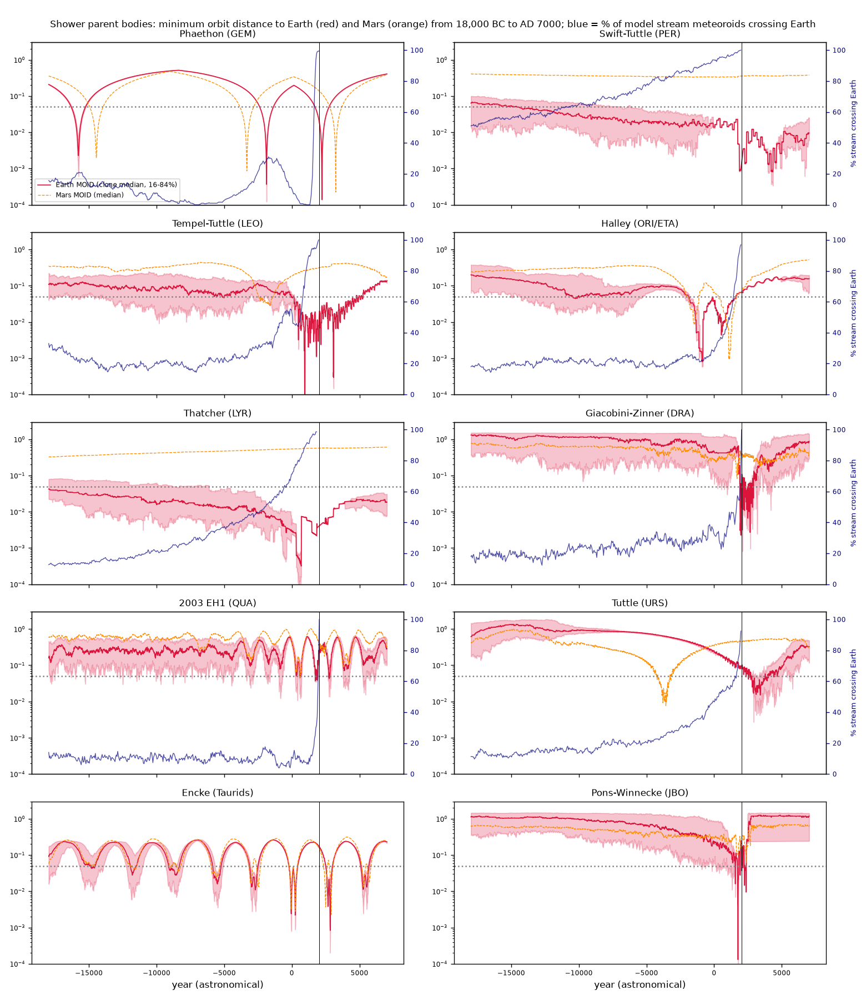

We asked whether major ancient religious and mythic texts, or the five monuments already tested in Part 1, line up with stream encounters, dated craters, or extreme solar events. The rules were written down before any text-versus-timeline comparison was run.
A text counted as “impact-like” only if it has all three motifs: (A) something falls from the sky, (B) fire or burning, and (C) destruction of land or sea, or mass death. Each text’s window is its scholarly composition-date range, plus a 500-year allowance for oral transmission (we also tested 0 and 1,000 years). Those windows were scored against the summed hazard from the ten parent bodies, a detrended stream-crossing measure, and the discrete markers (five confirmed Miyake events and seven dated Holocene craters). The control places the same windows at random dates between 3000 BC and AD 1600. The eleven texts that did not meet the motif rule were scored the same way, as an internal control.
Nine texts met the rule: Revelation 8:8–11; Isaiah 34; Genesis 19 (Sodom); Exodus 9 (hail and fire); Plato’s Timaeus 22c–d (Phaethon); Hesiod’s Titanomachy; the Völuspá account of Ragnarök; the Egyptian Tale of the Shipwrecked Sailor; and the Aztec Legend of the Suns (rain of fire). 2 Peter 3:10–12 speaks of a universal conflagration but of nothing falling, so it was not scored as impact-like; it is taken up under “Fire next time?” below. Exodus 9 also qualifies, which is a reminder of how loose this kind of metaphor is: a severe thunderstorm meets the same criteria.
With the 500-year allowance, impact-like texts sit at a parent-body hazard ratio of 0.87 (p = 0.76) and a stream-crossing ratio of 1.006 (p = 0.19). They overlap a Miyake event or dated crater in 7 windows versus 6.8 expected (p = 0.63). The other texts look the same (p = 0.27–0.89). Across the 0, 500 and 1,000-year allowances, every p-value is at least 0.08. The timing tests found no link. The data cannot rule out that some local tradition remembers a real fall — as with Kaali, Henbury, or Campo del Cielo in regional folklore — but nothing in this set requires a stream or solar catastrophe as the source of the texts.
A few specific claims, treated on their own terms:

Extreme solar-particle events — Miyake events — are marked by sharp, worldwide jumps in radiocarbon in tree rings, often confirmed in ice-core beryllium-10 and chlorine-36. Five are confirmed in the last 10,000 years: 7176 BC, 5259 BC, 664–663 BC, AD 774/5 (the strongest of the Holocene) and AD 993/4. Four more are candidates: about 12,350 BC, 5410 BC, AD 1052 and AD 1279. A 2026 re-analysis could not confirm AD 1279 as a single-year spike. Because only about 16% of the Holocene has been measured year by year in 14C, five events in 10,000 years is a lower bound: at least 0.5 per thousand years, or about a 2–10% chance per century. They occur at ordinary levels of reconstructed solar activity (p = 0.42).
We found no evidence that these events, or extreme coronal mass ejections, harmed people before electrical technology. Models of the AD 775 event find only modest ozone loss and no significant climate effect (Sukhodolov et al. 2017), and the extra radiation dose at ground level was small. Chronicles sometimes record great auroras as fiery skies or armies in the heavens, which is a plausible source for some “sky battle” imagery, but the timing test above found no link. Since the telegraph, the harm has been real and is well documented: sparks and shocked operators in 1859; telegraph and railway fires in 1921; the Québec blackout of 1989 (about six million people, for about nine hours); the Malmö blackout and airline reroutes in 2003; 38 Starlink satellites lost in February 2022; and GPS disruption to farm equipment in May 2024. We found no deaths directly attributed to a solar storm.
For a Carrington-class geomagnetic storm, the 64-year modern Dst record is too short to pin the tail: a statistical fit can make such a storm look either rare or almost impossible, depending on the threshold. The longer historical count is the better estimate. Since 1859 there have been two or three storms of that class (1859; May 1921, Dst about −907 nT; and probably February 1872). That gives about 11–16% per decade (90% range 2–37%), close to Riley’s (2012) published 12%.
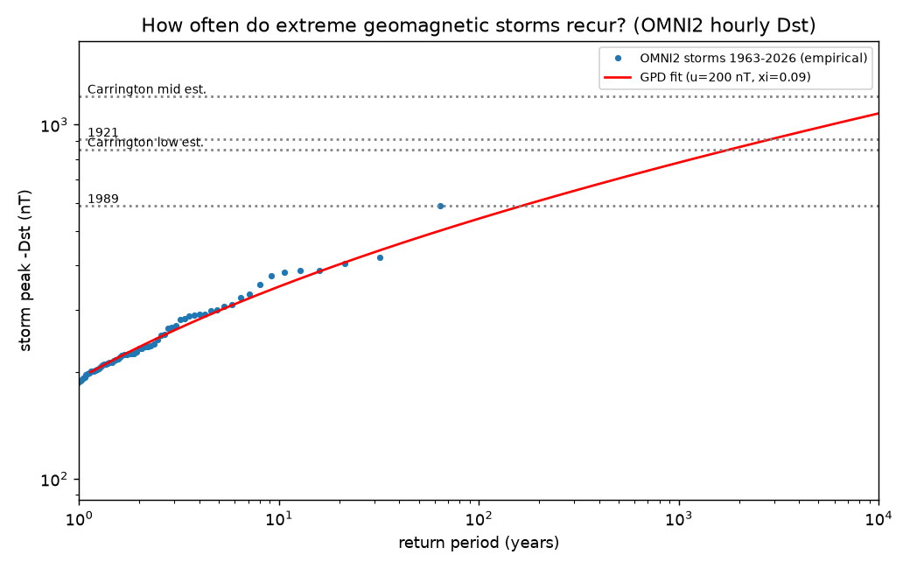
Solar Cycle 25 reached its 13-month smoothed peak in October 2024, at a sunspot number of 160.9 (SILSO). By April 2026 the smoothed number was 88.6. NOAA SWPC projects a cycle minimum around December 2030. Published forecasts for Cycle 26 put its start around 2030 and its peak around 2035–36, with amplitude about 117–133; we found no official NOAA panel forecast for Cycle 26 yet. In 9–11 thousand-year cosmogenic-isotope reconstructions, the roughly 210-year Suess / de Vries cycle is clearly present (it beats a red-noise test at 99%). A weaker Gleissberg signal near 125 years also passes. Peaks near 1,000 years (Eddy) and 2,300 years (Hallstatt) appear but do not beat red noise. Those records cover only four or five Hallstatt cycles, so they cannot support a forecast.
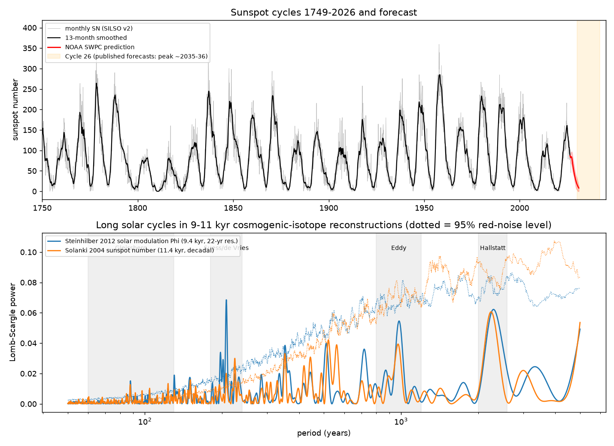
2 Peter 3:10–12 says the heavens will pass away and the earth will be burned up — “destroyed by fire next time,” in the long biblical contrast with the Flood. We treated that as a physical hypothesis and asked what could actually set the world on fire.
Physics allows three routes to a global fire, and they are not equal:
The prophecy’s imagery fits route 1 best. The data say route 1 is not cyclic, is not scheduled, and on human timescales is far less likely than a regional impact or a grid-killing solar storm.

“Holds” means the claim is supported by the measurements. “Does not hold” means the data contradict it. “Inconclusive” means a resemblance is real but is not rare enough, or is too sensitive to small errors, to treat as evidence of intent. These tests evaluate published claims, not the people who made them.
| Claim | Verdict | In brief |
|---|---|---|
| Giza’s three pyramids copy the shape of Orion’s Belt | Inconclusive | The match is real (Procrustes D = 1.7×10−4 at 10,500 BC), but near-collinear triples are common: 51% of Egyptian pyramid triples have some bright-star triple that fits as well. |
| The Giza–belt match is “perfect” in 10,450–10,500 BC | Does not hold | The shape fit is almost the same in every era (D = 1.7×10−4 at 10,500 BC, 1.3×10−4 at 2500 BC, 1.2×10−4 today). The belt’s tilt at meridian transit equals the pyramid diagonal near 12,000 BC, not 10,500 BC (13° off). |
| The Nile copies the Milky Way as the pyramids copy the belt | Does not hold | The belt–Milky Way angle is about 25° in every era; the pyramid diagonal makes about 41° with the Nile near Giza. The river line used here is coarse. |
| The Giza layout is “upside-down” relative to the belt as seen in the sky | Holds | Matching the usual star-to-pyramid pairing requires a rotation of about 145–167°, and no left–right mirror. The shape still matches once that rotation is allowed. |
| Angkor’s temples map Draco as it stood in 10,500 BC | Does not hold | The fit is nearly flat from 14,000 BC to the present, so 10,500 BC has no special status. Many other selections of seven temples fit as well or better. The temples were built in the 9th–12th centuries AD. |
| The Sphinx faced Leo rising due east at the vernal equinox in 10,500 BC | Astronomy holds; the dating inference does not | The Sphinx faces due east in every era, which marks equinox sunrise, not Leo. The Sun was in Leo at the March equinox from 10,651 to 8,051 BC, and Regulus sat on the horizon at dawn in 10,538 BC. The same test fits other bright stars at other dates, so it does not date the monument. |
| Thornborough Henges copy Orion’s Belt | Inconclusive | The shape fit is as close as Giza’s, but the offset is only about 38 m and is sensitive to tens of metres in the henge centres. A peer-reviewed study of the site emphasizes the cursus framing the belt’s setting, not a ground plan of the stars. |
| Teotihuacan’s Sun, Moon and Feathered Serpent pyramids copy the belt | Does not hold | The fit is poor (D = 0.022). About 13% of random bright-star triples match as well. |
| A comet or meteor impact triggered the Younger Dryas onset (~12.9 ka BP) | Not supported | See the box below. Our Taurid/Encke tests are neutral. There is no crater of that age; several laboratory claims have failed independent checks; the leading climate account is a weakening of the Atlantic circulation from meltwater. |
The usual pairing is Khufu with Alnitak, Khafre with Alnilam, and Menkaure with Mintaka. The ground triangle is nearly a line: the sides are 469 m and 465 m, and Khafre sits 3.8% of the baseline off the line. The belt is similar (ratio 0.98, offset 2.9–3.3%). Both bend the same way once one pattern is rotated, so a mirror image is not required.
That shape match is almost independent of date, so it cannot select 10,500 BC. The date argument in The Message of the Sphinx (Hancock & Bauval 1996) is instead that the belt at meridian transit lines up with the pyramid diagonal, and that Alnitak then stands at the lowest point of its precession cycle. Recreating that test with the Vondrák, Capitaine & Wallace (2011) precession model gives a lowest culmination of about 9.1° near 10,700 BC — close to their 9°20′ at 10,500 BC — but the tilt of the belt equals the 37.5° pyramid diagonal near 12,000 BC (within 1° from 12,150 to 11,900 BC). At 10,500 BC the tilt is 50°, about 13° away. At the pyramids’ construction date, around 2500 BC, it is 73°.
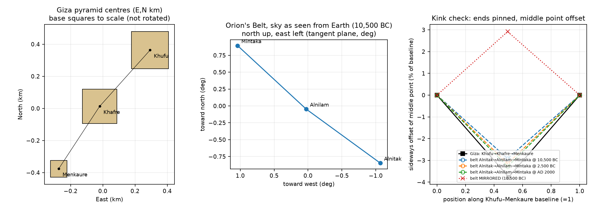
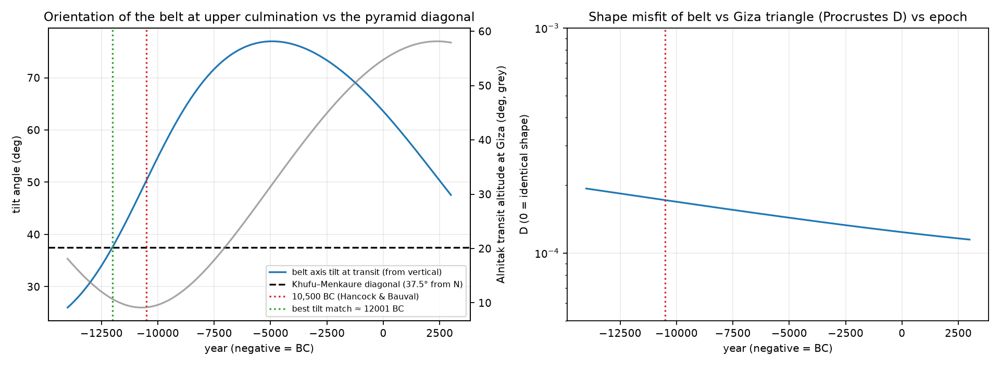
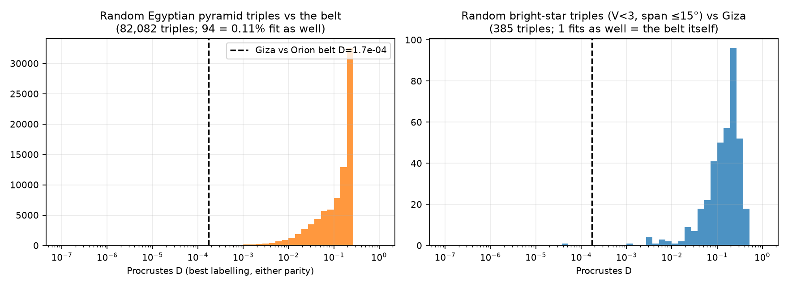
The Angkor claim comes from Heaven’s Mirror (Hancock & Faiia 1998). No published temple-to-star table was available, so the test used the seven-temple key reconstructed by Carlotto (2021). The best shape misfit is D = 0.067, and it stays between 0.067 and 0.085 from 14,000 BC to AD 2000, so the sky of 10,500 BC is not singled out. The residual is about 0.94 km on a pattern 3.7 km across. The match is to the chart of the pole seen from outside the sky, the mirror image of the naked-eye view.
Selecting which temples to use matters more than the date. Of 53 monuments in the Angkor area, about 200,000 of the 154 million possible sets of seven fit the same seven Draco stars as well as the claimed set. A short search finds a seven-temple set that fits about three times better. Independent archaeoastronomy at Angkor finds a tight cardinal and solar pattern, not a constellation plan (Magli 2016; Romain 2018).
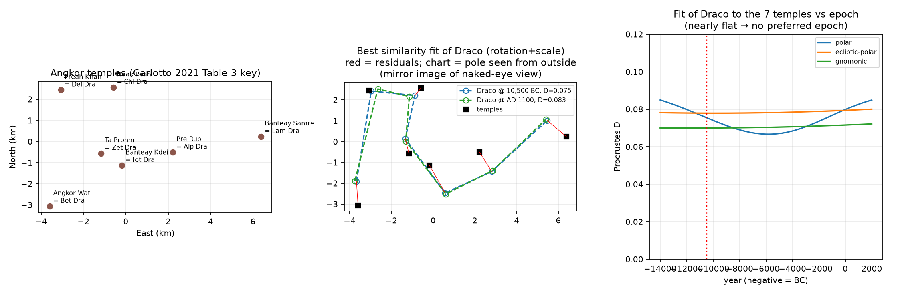
The Sphinx faces due east, so it faces equinox sunrise in every era. In 10,500 BC, with the Sun 12° below the horizon on the March-equinox morning, Leo stood on that eastern horizon: Regulus was at altitude 0° in 10,538 BC. That part of the claim is correct. It is not a unique date. Every bright star on the ecliptic has a year when it stands there. Aldebaran does so in 5,105 BC, the Pleiades in 3,468 BC, Hamal in 1,203 BC. At the date usually given for the Sphinx, around 2500 BC in the reign of Khafre, the equinox Sun was in Taurus and Leo was below the horizon at dawn.
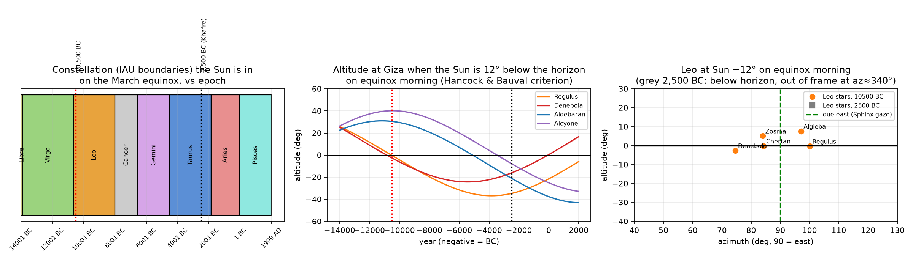
Headline question · confidence about 85% that an impact was not the primary trigger
The short answer is no, probably not. A smaller airburst that merely coincided with a climate shift already under way cannot be fully ruled out, which is why this is not called a refutation.
Our own Taurid and Encke calculations, from Part 1, are neutral. The Younger Dryas boundary (12,835–12,735 cal BP) sits at an ordinary level of Taurid Earth-crossing (69th percentile, p = 0.30) and 649 years from the nearest time Encke’s orbit crossed Earth’s (p = 0.52). That does not show an impact, and it does not rule one out. It only shows the stream was not unusually active then. The nearest extreme solar-particle event in our records, a candidate Miyake spike at 14,300 cal BP (about 12,350 BC; Bard et al. 2023), is some 1,430 years earlier and is not the trigger.
On the physical evidence: there is no known impact crater dated to the onset. The Hiawatha structure under Greenland’s ice, once suggested as a candidate, is 57.99 ± 0.54 million years old (Kjær et al. 2022). Reports of nanodiamonds, a platinum anomaly, microspherules and meltglass at the boundary have been challenged on identification, replication and dating (Pinter et al. 2011; Boslough et al. 2013; Meltzer et al. 2014; Daulton et al. 2017; Holliday et al. 2023). Siliceous scoria from Abu Hureyra and nearby sites has also been attributed to house fires over a wide date range (Thy et al. 2015). A November 2025 correction to the 2020 Abu Hureyra meltglass paper fixed inconsistencies in its dating table.
The leading account of the climate shift itself is a weakening of the Atlantic Meridional Overturning Circulation after meltwater from the Laurentide ice sheet, including an outburst from Lake Agassiz routed toward the Arctic (Murton et al. 2010). The Laacher See eruption in Germany is now dated to 13,006 ± 9 cal BP, about 200 years before the European Younger Dryas onset at 12,807 ± 12 cal BP, and is not a direct cause (Reinig et al. 2021).
From the JPL Small-Body Database we took every long-period comet (“C/” designation, eccentricity above 0.98) whose perihelion lies between 0.2 and 1.3 astronomical units, and we excluded sungrazers found only by solar observatories such as SOHO. Warning time is the number of days from the first observation to perihelion. Precoveries — images found later — are included, so these times are slightly optimistic.
| Perihelion era | Comets | Median warning | 10th–90th percentile | Found < 6 months out | Found only after perihelion |
|---|---|---|---|---|---|
| 1900–1989 | 138 | 29 days | 0–106 days | 96% | 27% |
| 1990–2009 | 68 | 74 days | 20–474 days | 72% | 0% |
| 2010–2026 | 82 | 118 days | 11–442 days | 59% | 9% |
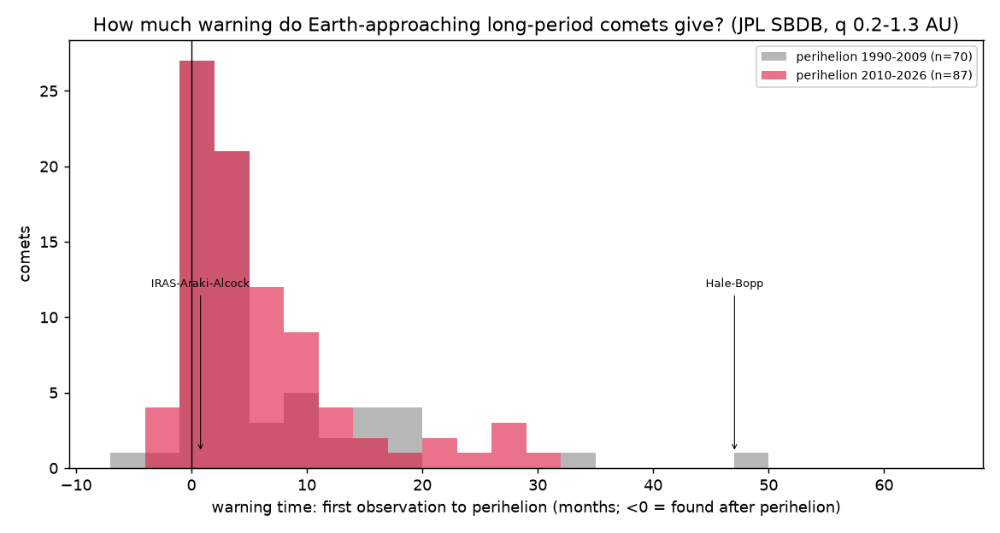
Surveys have roughly quadrupled the median warning since the 1980s, but a “months, not years” warning is still the norm. A few well-known cases:
About 3.8 Earth-crossing long-period comets (perihelion inside Earth’s orbit) were observed per year in 2010–2025, and about one per year was bright enough to suggest a kilometre-class nucleus. Combining that flux with a typical impact chance of about 2×10−9 per perihelion passage, and with the NASA NEO Science Definition Team’s 2017 finding that long-period comets are about 1% of total impact risk, a ≥1 km long-period comet impact is roughly a once-in-30-to-100-million-year event — about 1–3 in a million per century.
JPL’s close-approach database lists no long-period comet within 0.2 au of Earth in any future year, because those orbits cannot be projected reliably that far ahead. The nearest listed future approaches are all periodic comets: 15P/Finlay at 0.033 au in 2060, 73P-B at 0.036 au in 2109, and 300P/Catalina at 0.053 au in 2036. None is a threat. Earth does, however, cross dust trails left by long-period comets: the Lyrids from C/1861 G1 Thatcher, the alpha Monocerotids from an undiscovered long-period comet (short storms in 1925, 1935, 1985, 1995 and 2019), and the Aurigids from C/1911 N1 Kiess.
Three objects from outside the solar system have been confirmed: 1I/ʻOumuamua (2017, roughly 100–200 m), 2I/Borisov (2019, roughly 0.4–1 km), and 3I/ATLAS, discovered 1 July 2025 and confirmed by NASA. JWST thermal data put 3I/ATLAS’s nucleus near 2.2 km (Hubble bounds were 0.44–5.6 km). It reached perihelion at 1.36 au on 30 October 2025 and never came closer to Earth than 1.8 au.
Published population estimates imply about 13 objects ≥0.2 km, and about 0.04 objects ≥0.8 km, within 3 au of the Sun at any time. Combined with typical encounter speeds and the Sun’s gravitational focusing, that suggests a ≥0.2 km interstellar object hits Earth about once per 60 million years, and a ≥0.8 km object about once per 20 billion years — roughly 1/3,000 of the rate for ≥140 m asteroids. The rate rests on only three detections, so it could be off by a factor of ten or more. Even at the high end, this is a negligible part of the risk.
The new figures sit beside the odds table from Part 2. These are long-run averages, not a schedule. “Chance, next 100 years” assumes a random (Poisson) process at the published mean interval.
| Event class | Mean interval | Chance, next 100 years | Source |
|---|---|---|---|
| ~20 m airburst (Chelyabinsk-class) | 50–100 years | 63–86% | Part 2, from NASEM 2022 |
| Carrington-class geomagnetic storm | ~55–85 years | ~70–83% | Part 2 |
| ≥140 m asteroid impact | ~20,000 years | 0.5% | Part 2 |
| ≥1 km asteroid impact | ~600,000 years | 0.016% | Part 2 |
| ~10 km impact (Chicxulub-class) | ~100 million years | ~0.0001% | Part 2 |
| ≥1 km long-period comet impact | ~30–100 million years | ~0.0001–0.0003% | This study; NASA NEO SDT 2017 (~1% of total impact risk) |
| Known Centaur becomes a comet and hits Earth | ~170 million years | ~0.00006% | This study, 100,000-year integration of 1,114 known Centaurs |
| Interstellar object ≥0.2 km hits Earth | ~60 million years | ~0.0002% | This study, from published ISO population estimates (uncertain by 10× or more) |
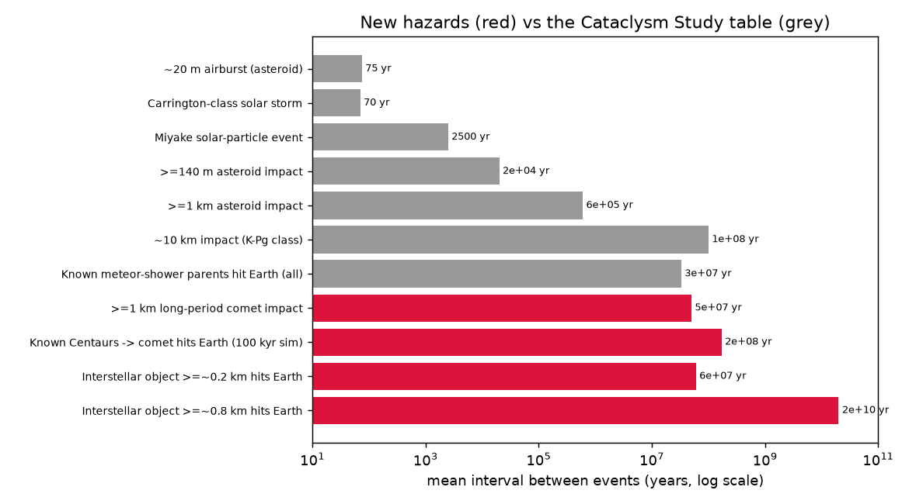
JPL lists 1,114 objects in the Centaur class (semi-major axis between Jupiter and Neptune). Diameters are measured for 59 of them; the rest are estimated from absolute magnitude assuming an albedo of 0.08, which can be off by about a factor of two. About 409 are estimated at ≥10 km and about 156 at ≥50 km. The largest are Chariklo (302 km, ringed), Pholus (190 km) and Chiron (166 km, also catalogued as comet 95P). 29P/Schwassmann-Wachmann 1, a roughly 60 km body just beyond Jupiter, sits in the “Gateway” region that feeds the Jupiter-family comets (Sarid et al. 2019). It is classified as a comet, so we added it separately, with 39P/Oterma, 165P/LINEAR and 167P/CINEOS, and ran 50 slightly perturbed copies of each.
We integrated all 1,114 known Centaurs, plus three slightly perturbed copies of each, 100,000 years forward with REBOUND’s MERCURIUS integrator, using the Sun and the four giant planets from JPL Horizons. Orbits were recorded every 10 years. Of the 916 objects that currently stay beyond 2.5 au:
| Outcome | In 10,000 years | In 30,000 years | In 100,000 years |
|---|---|---|---|
| Becomes Jupiter-family-like (perihelion < 2.5 au) | 16% | 25% | 34% |
| Reaches a near-Earth orbit (perihelion < 1.3 au) | 2.4% | 5.8% | 12.5% |
| Ejected or lost | 0.7% | 2.5% | 12.9% |
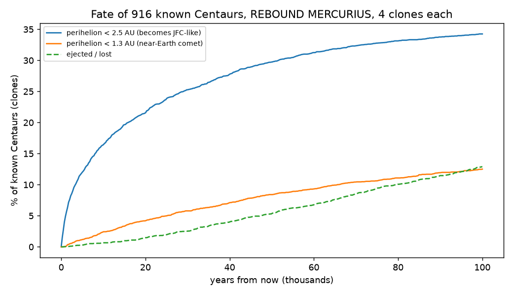
In numbers: about 310 of the known objects are expected to become Jupiter-family comets, and about 115 to become near-Earth comets, within 100,000 years. Of those, about ten are ≥10 km bodies and about one is ≥50 km. The known population loses about half its members in 130,000 years — much shorter than the 1–10 million year Centaur lifetimes in the literature (Horner et al. 2004; Tiscareno & Malhotra 2003), because the objects we have found are biased toward unstable orbits near Jupiter, where they are easiest to discover.
Chiron, Chariklo, Pholus, Nessus and Asbolus all stay safely out in this run (Chiron’s closest perihelion is 5.7 au). Echeclus reached perihelion inside 2.5 au in one of four copies (minimum 1.5 au). 29P becomes a Jupiter-family comet in 28% of copies within 10,000 years and in 62% within 100,000 years (median about 20,000 years). 39P/Oterma does so in 38% of copies within 10,000 years; 165P in 6% within 100,000 years; 167P in none.
Adding up the years each copy spends on an Earth-crossing orbit, and using a typical intrinsic impact probability of 0.5–3×10−9 per year, gives about 6×10−4 expected Earth impacts from the known Centaurs over 100,000 years (range about 3×10−4 to 2×10−3). That is about the same as the combined expected hits from the known meteor-shower parent comets in Part 2, and far below the background asteroid rate. The figure leans high, because real comets fade or break up after a few hundred to a few thousand perihelion passages.
Clube and Napier argued that a giant comet, perhaps a large Centaur, can enter the inner solar system, break up, and leave a debris stream that periodically bombards Earth — with the Taurid complex as a proposed remnant. Our integration finds that roughly one ≥50 km body from the known Centaurs reaches a near-Earth orbit per 100,000 years, so the general premise is dynamically plausible. The Taurid–Encke complex could be the remnant of such a body. However, the Part 1 tests of Taurid timing against ancient records and impact proxies were null, Encke-family orbital ages of about 10–20,000 years do not require a single recent catastrophe, and there is no consensus evidence tying a Taurid breakup to the Younger Dryas or to historic disasters. A giant comet entering the inner system is plausible. A recent Taurid-progenitor breakup remains unproven.
The curve is the Spratt & Lisiecki (2016) global sea-level stack, downloaded from NOAA. It averages seven published reconstructions, in 1,000-year steps, and is scaled so 5 ka = 0. In this stack the Last Glacial Maximum low is about −130 m at 24 ka and about −118 m at 20 ka. Lambeck et al. (2014), inverting about 1,000 far-field observations, place that low near −134 m. From 21 ka to the mid-Holocene the rise is about 120 m. The stack’s +8 m at 0 ka is within its uncertainty, not a measured late-Holocene highstand. Because the steps are 1,000 years long, century-scale pulses are smoothed. Local relative sea level can differ by tens of metres, because the land itself moves (isostasy).
Lambeck et al. found that the main deglacial rise ran from about 16.5 to 8.2 ka at an average 12 m per thousand years, with a much faster interval at 14.5–14.0 ka (meltwater pulse 1A, ≥40 mm/year). They found no evidence for a global meltwater pulse 1B at about 11.3 ka. Rise then slowed from 8.2 ka to about 2.5 ka, after which ocean volume was nearly steady until the industrial-era rise.
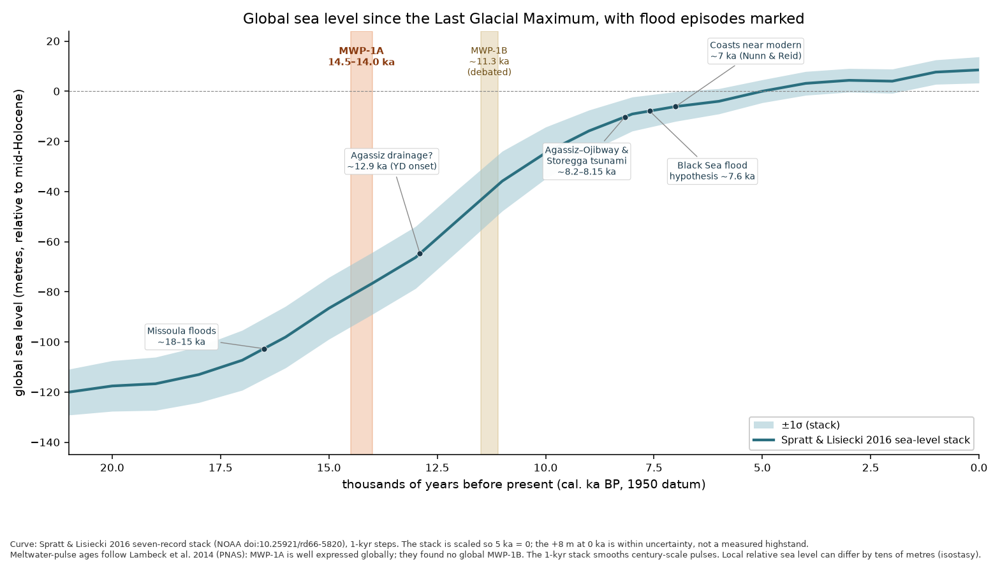
These shelf drownings are well established as geography. Links to particular stories are weaker and are marked as such.
In the table and chart, “event” is the strength of the physical evidence — geology, sediments, or instruments. “Link” is the strength of the tie to a named tradition. A well-dated flood can still have only a speculative link to a story.
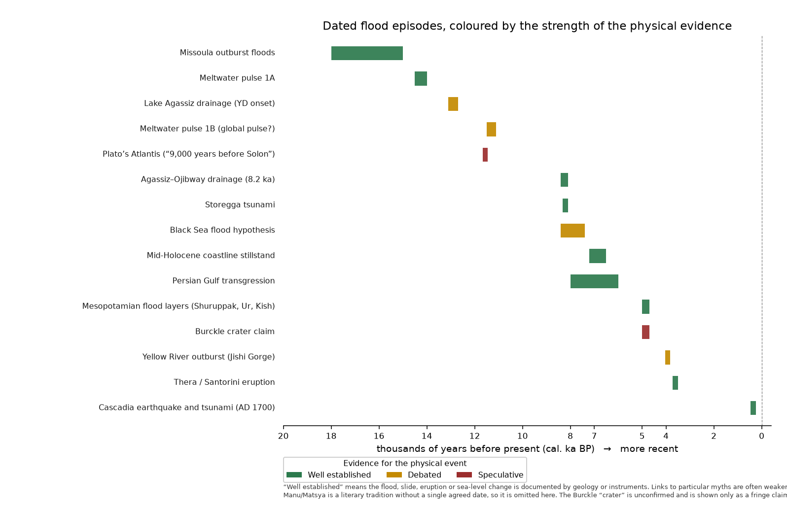
| Event | Date | Physical evidence | Associated traditions | Event | Link |
|---|---|---|---|---|---|
| Missoula outburst floods | ~18–15 ka | Repeated glacial-lake outburst floods across the Channeled Scablands of the Columbia Plateau. | Some Native American flood traditions of the Columbia Basin have been compared with these events. | Well established | Debated (interpretive) |
| Meltwater pulse 1A | 14.5–14.0 ka | Rapid global sea-level rise, ≥40 mm/year (Lambeck et al. 2014). | Not tied to one local story; part of the broader drowning of shelves. | Well established | — |
| Lake Agassiz drainage (Younger Dryas onset) | ~12.9 ka | A large meltwater release from Lake Agassiz has been proposed around the Younger Dryas onset; whether it triggered that climate shift is contested. A follow-up study of the Agassiz drainages is planned; nothing from that work is reported here. | Sometimes invoked in discussions of the Younger Dryas. | Debated | — |
| Meltwater pulse 1B | ~11.3 ka | Proposed in some coral records. Lambeck et al. 2014 found no global pulse. | — | Debated | — |
| Plato’s Atlantis | “9,000 years before Solon” ≈ 9600 BC (~11.55 ka), near the Younger Dryas end and the proposed MWP-1B | No archaeological evidence for a lost Atlantic island-continent as described. Plato is the sole source (Timaeus 25c–d; Critias 108e). | An alternative reading, sometimes proposed, takes the interval as 900 years rather than 9,000, which would fall near the Thera eruption (~1600 BC). The eruption is well established; identifying it with Atlantis is a modern interpretation. | Speculative | Speculative |
| Agassiz–Ojibway drainage | ~8.2 ka | Freshwater outburst into the North Atlantic, widely linked to the 8.2 ka cold event. | — | Well established | — |
| Storegga tsunami | ~8.15 ka | A submarine landslide off Norway left tsunami deposits around the North Sea and in Scotland, Norway and beyond. | May have struck remaining Doggerland settlements. | Well established | Debated (as a single “end of Doggerland” story) |
| Black Sea flood hypothesis | ~7.6–8.4 ka | Ryan, Pitman and colleagues proposed a rapid fill of a Black Sea lake by the Mediterranean. Other researchers argue for a more gradual or oscillating rise. | Sometimes compared with Near Eastern flood stories. | Debated | Speculative |
| Mid-Holocene coastline stillstand | ~7 ka | The rate of global rise slowed; many coasts were near their modern position. | Nunn & Reid 2016: Aboriginal stories of a drowned coastline. | Well established (sea level) | Debated (7,000-year oral memory) |
| Persian Gulf transgression | ~8–6 ka | The Gulf basin flooded as sea level rose (Lambeck 1996). | Dilmun, and some identifications with Eden. | Well established (transgression) | Speculative |
| Mesopotamian flood layers (Shuruppak, Ur, Kish) | ~2900 BC | Flood silt is documented at several Early Dynastic cities. The layers are not all the same date or thickness, and they need not be one basin-wide flood. | Ziusudra (Sumerian), Atrahasis, Utnapishtim in Gilgamesh, and later the flood in Genesis. | Well established (local layers) | Debated (as “the” Flood) |
| Burckle crater claim | claimed ~2800 BC | A proposed undersea crater in the Indian Ocean. It is not a confirmed impact structure. | Invoked in some popular worldwide-flood accounts. | Speculative (unconfirmed) | Speculative |
| Yellow River outburst (Jishi Gorge) | ~1920 BC (Wu et al. 2016) | Wu et al. proposed an outburst flood from Jishi Gorge and tied it to the start of the Xia. The date, the deposits, and the Xia link have all been critiqued (including Han 2017, and later comments). | Gun and Yu and the Great Flood of early Chinese tradition. | Debated | Debated |
| Thera / Santorini eruption | ~1600 BC | A well-documented caldera-forming eruption; the exact year is still discussed (radiocarbon near the late 17th century BC versus a later archaeological date). | Later comparisons with Deucalion’s flood, and with Atlantis. The eruption is the evidence-backed alternative to a 9600 BC reading of Plato. | Well established (eruption) | Speculative (myth links) |
| Manu / Matsya | no agreed date | No single archaeological flood is uniquely pinned to the story. | The Hindu flood of Manu, saved by the fish Matsya, an avatar of Vishnu. | — | Literary / speculative as a dated event |
| Cascadia earthquake and tsunami | 26 January 1700 | A magnitude ~9 earthquake at the Cascadia subduction zone, with a tsunami recorded in Japan as an “orphan” wave (Satake et al.). | Pacific Northwest Indigenous traditions of shaking and a great flood from the sea (see Ludwin et al. 2005). | Well established | Well supported |
In Timaeus 25c–d, Plato has Egyptian priests tell Solon that Atlantis, a great island power beyond the Pillars of Heracles, waged war on a prehistoric Athens and was “swallowed by the sea and vanished” in a single day and night of earthquakes and floods. Critias 108e places that war 9,000 years before Solon. Solon lived in the early sixth century BC, so the face-value date is about 9600 BC — close to the end of the Younger Dryas (~9700 BC) and to the proposed meltwater pulse 1B. No earlier independent account is known, and no archaeological evidence supports a lost Atlantic continent of the kind Plato describes.
Some later readers have suggested that “9,000 years” might be 900 years, which would fall near 1500–1600 BC and the Thera eruption. Thera is the evidence-backed disaster in that century; the identification with Atlantis remains an interpretation of Plato, not a finding from the ground. We rate the 9600 BC Atlantis, as a physical event, speculative.
The backtrack used REBOUND with the IAS15 integrator, the Sun and eight planets from JPL Horizons, comet 2P/Encke from the JPL Small-Body Database, and 1,400 meteoroid orbits seeded from observed Taurid-complex showers in the IAU Meteor Data Center (Jopek 2003; Brown 2008, 2010; Jenniskens 2016, 2018), plus 245 Encke clones, integrated 16,000 years backward. As a check, the model reproduces today’s Southern Taurid and June β Taurid radiants. The stream model starts from today’s particles, so it cannot show how dense the stream really was in the deep past, and swarm years cannot be predicted beyond a few centuries. Crater ages carry uncertainties of hundreds of years. Fireball speeds exist for only 30 events.
This page is a static section of RealAether, intended to live at
realaether/impact/ on GitHub Pages. The upcoming-flyby list
is taken from the
JPL SBDB Close-Approach Data API (CNEOS),
which is authoritative. Orbital elements and physical parameters come from the
JPL SBDB Query API.
Objects currently on the
Sentry risk list are flagged, but this tracker is not an impact-risk product — Sentry is.
Our REBOUND + DE440s N-body engine (IAS15, first-order GR, Earth and Moon separate) independently re-integrates a subset:
every upcoming Earth approach within 0.01 au, the 200 closest, and every condition-code-0 upcoming Earth approach.
It does not re-integrate all 43,000+ NEOs, because CNEOS already searched that catalog. The engine does not include Earth J2, Yarkovsky, or asteroid perturbers.
Civil times are converted from CNEOS TDB to America/New_York. The Taurid / Encke tests, monument alignments and Vulture Stone check are documented above and in the 27 November 2026 Taurid report. The follow-on study of other meteor streams, ancient texts, solar extremes and future risk is in Part 2 and the cataclysm report. Tests of whether major monuments copy constellations, and a review of the Younger Dryas impact hypothesis, are in Part 3 and the monument–sky report. Long-period comets, interstellar objects and Centaurs are in Part 4 and the LPC & Centaur report. A review of global sea-level rise since the last ice age, and of dated floods and the myths often linked to them, is in Part 5 and the floods report. A cited timeline of impacts, airbursts and extreme solar events is on the Timeline page. No home address or local network information is published here.